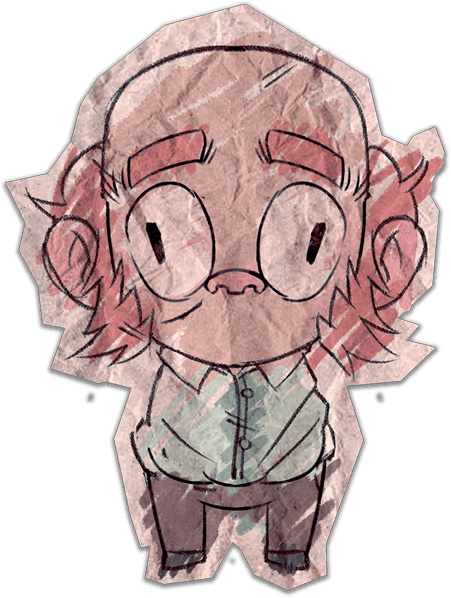
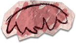
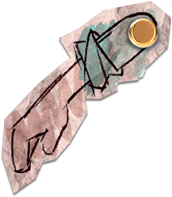
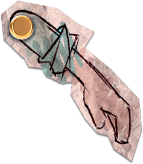
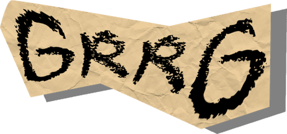

Sección 01 · Reportajes
Siempre me ha gustado el arte. Empecé dibujando y produciendo música, y estudiando el ciclo superior de Animaciones 3D, Juegos y Entornos Interactivos me di cuenta de que podía vivir de esto. Dejó de ser un sueño lejano y se convirtió en mi objetivo.
Mi perfil es generalista: animación 2D y 3D, VFX, tech art y programación en Unity. Rindo mejor en equipos pequeños, donde paso de lo técnico a lo artístico según lo que pidan el proyecto y sus plazos.





mi rig cutout de Greg ↑
(TheWorkingDead)